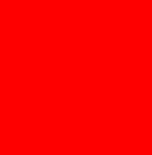
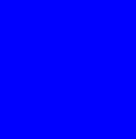

Higgsfield Director · diário de teste
Teste local do novo fluxo de croquis em duas fases, em 25 de novembro de 2026. Esta página mostra exatamente o que foi executado; as imagens abaixo são uma folha sintética de duas cores, não gerações do Higgsfield.
Fase A/B no Higgsfield: pendentehfd.py recortar produziu dois comandos de ffmpeg. Executados, eles salvaram um quadro vermelho e outro azul, cada um com 192 × 196 px. A margem padrão removeu 1% em cada borda da caixa indicada. Os 75 testes automatizados da skill passaram.

python3 higgsfield-director/scripts/hfd.py recortar \ /tmp/hfd-croqui-folha.png /tmp/hfd-croqui-quadros \ tomada_1:0,0,0.5,1 tomada_2:0.5,0,1,1 python3 -m unittest discover -s higgsfield-director/tests
Os comandos emitidos pelo helper foram executados com ffmpeg. As dimensões foram conferidas com sips e as cores centrais com Pillow. Código-fonte atualizado para o main remoto no commit d03e2cf7; a pasta local é um espelho de arquivos, sem histórico Git.
Falta consultar o catálogo e a cotação ao vivo pelo conector Higgsfield, aprovar o gasto e gerar a folha da Fase A. Depois, cada painel será mapeado à tomada, recortado e usado como referência para um quadro da Fase B. Esta página deve receber as imagens, os custos exatos, as decisões por tomada e as alterações da próxima versão.